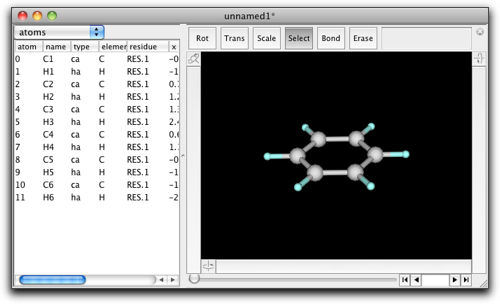
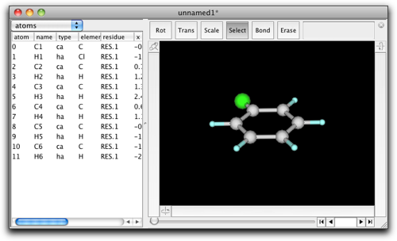
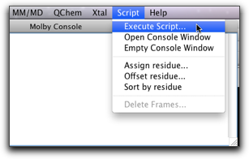
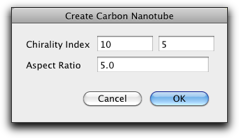

第十一段階：組み込み Ruby インタプリタを使う
Molby の最も有用な機能の１つは、内蔵の Ruby インタプリタです。分子モデリングを行うとき、ある数学的な規則に従ってモデルを変更したいことがしばしばあります。また、分子のある種の情報を自動化された「スクリプト」（コンピュータプログラム）で抽出してテキストとして書き出し、グラフ描画ソフトウェアで処理することも有用です。内蔵 Ruby インタプリタは、このような場合に威力を発揮します。実は、Molby の機能の多くの部分は Ruby スクリプトで実装されているのです。
Molby の内蔵 Ruby インタプリタを使うためには、プログラミング言語 Ruby の知識が必要です。インターネット上で良いオンラインチュートリアルを見つけてください。もっとも、以下の解説を読めば、ある程度のイメージはつかめるでしょう。
1. Ruby コンソールを使う
Molby が起動すると、Ruby の「コンソールウィンドウ」が開きます。

このウィンドウ上で、Ruby スクリプトを対話的に実行することができます。いくつか試してみましょう。コンソールウィンドウをクリックしてアクティブにして、"1+2"、続いてリターンキーをタイプしてください。次のようになります。
% 1+2 --> 3 %
Ruby インタプリタが "1+2" を計算し、答え (3) を次の行に表示したところです。
カッコを含む長い式も計算できます。
% (13.0*13.0+7.0*7.0)/1.365 -->159.70695970696 %
数学関数も使うことができます。
% exp(-2.0) * (sin(0.25) + cos(0.25)) -->0.1646105219232536 %
通常 Ruby では、これらの数学関数を使うときには Math.exp, Math.sin のように書かなくてはなりません。Molby では、Math という接頭辞は必要ありません。これは Molby が起動時に Math モジュールを "include" するためです。
文字列 (Strings) を使うこともできます。
% "C" + "32" -->"C32" %
ここの "32" は数ではなく文字列です。引用符で囲まれているからです。引用符を省略するとどうなるでしょう？
% "C" + 32

Molby はエラーメッセージ "no implicit conversion of Fixnum into String" を表示します。これは、「整数」32 を「文字列」"C" に足すことはできないことを意味しています。このような「型が違う」エラーはとてもよく起きるので、どのように直せばいいかをよく理解しておいてください。
Ruby のもう１つの便利な機能は「配列」(Array) です。これは、他の Ruby オブジェクトを順番に並べたものです。配列は、値をコンマで区切って角括弧 [] で囲むことで表します。
% [1, 2, 3] -->[1, 2, 3] %
Ruby のオブジェクトは「変数」に格納することができます。変数の名前は、小文字のアルファベットで始まり、数字またはアルファベット ("_" を含む) の並びでなくてはなりません。
% a = ["apple", "orange", "grape"] -->["apple", "orange", "grape"] % a[0] # 配列の要素を指定する -->"apple"
2. Molby スクリプトで分子を扱う
ここまでの例では、Ruby の組み込み型 Integer, String, Array を使ってきましたが、Molby スクリプトでは「分子」を扱うことが必要になります。ベンゼン分子があるとしましょう。

これをクロロベンゼンに変えたいとします。グラフィックインターフェイスでは２つのやり方があります。H1原子をダブルクリックしてダイアログボックスに "Cl" と入力するか、属性テーブルの "element" のセルで "H" を "Cl" に変えます。これを Ruby スクリプトで行うには、次のようにします。
% atoms[1].element = "Cl" -->"Cl" %

この短いコードに、Molby でのコーディングの重要な技法が含まれています。まず、atoms は「現在の分子」（コンソールウィンドウを除いて最も手前側にあるウィンドウの分子）に含まれる原子の並びを表します。atoms は Ruby の配列 (Array) ではありませんが、多くの点で配列と同じように使うことができます。特に、「添字」をつけて特定の原子を指定することができます。
atoms[i] # 現在の分子の i 番目の原子
atom[i] ではなく atoms[i] であることに注意してください。混乱しますが、これは atoms が原子の並びで [] が「…番目の要素を取り出す」という機能を表すためです。
次は .element = "Cl" です。Ruby では、ピリオド (.) に続けて単語 (element) を書くと、「メソッド呼び出し」になります。「メソッド」とはプログラミング言語 Ruby の用語で、ある対象（オブジェクト）に固有の動作を指します。この場合は、atoms[1] がオブジェクトで、element= という名前のメソッドを持っています（最後の '=' を含みます）。このメソッドは、「その原子の元素記号を右辺の文字列で表されたものに変える」という働きをします。このようにして、スクリプト atoms[1].element = "Cl" は、原子１の元素記号を Cl に変えます。
もし、全部の水素原子を塩素に変えたいとしたらどうでしょう？ 次のようにします。
% natoms.times { |i| if atoms[i].element == "H"; atoms[i].element = "Cl"; end } -->12 %
これは前の例よりずっと複雑です。ステップごとに説明していきます。
natoms は、現在の分子の原子数を整数で返します。これは実はメソッド呼び出しで、Molecule 型オブジェクトのメソッド natoms を呼んでいます。ピリオドがないのにメソッドが呼び出されているのはなぜでしょう？ これは Ruby 言語の仕様に、「暗黙のメソッド呼び出し」があるためです。あとでもう少し詳しく説明します。
natoms # 12 となる
times は、Integer （これは Ruby の組み込み型です）のメソッドです。その後ろの中括弧 {} で囲まれたコードを、指定した回数実行します。
natoms.times { ... } # { ... } が 12 回実行される
中括弧で囲んだコードを Ruby の用語で「ブロック」と呼びます。
繰り返すコード（ブロック）の中で、「今実行しているのは何回目？」かを知りたいことがあります。このためには、ブロックの先頭で、２本の縦棒 "|" で囲んで変数を指定します。
natoms.times { |i| ... } # { ... } の中で、変数 i は繰り返し回数を表す
次のようなコードがテストのためによく使われます。(puts は与えられたオブジェクトをコンソールに出力します。)
% natoms.times { |i| puts i } 0 1 2 3 4 5 6 7 8 9 10 11 -->12
最後の行の "12" は、times メソッドの「戻り値」です。その上の 0 から 11 の数は、puts メソッドからの出力です。ブロックが 12 回実行され、変数 i が 0 から 11 まで変化したことがわかりますね。
ブロックの中には、if 文があります。
if atoms[i].element == "H"; atoms[i].element = "Cl"; end
if 文の一般形は次の通りです。
if <条件>; <実行文>; end
まず <条件> が評価されます。それが「真」ならば、<実行文> が実行されます。条件が「真」でなければ、<実行文> はスキップされます。
注: Ruby は false と nil だけを「真でない」値とします。その他の値はすべて「真」です。特に、数値の 0（ゼロ）と空の文字列 ("") も「真」となります（これは Perl などの他のプログラミング言語とは異なります）。多くの Ruby メソッドは、失敗したときに nil を返します。これらのメソッドは条件部分にそのまま使えます。
最後に出てくる element メソッドは、先に出て来た element= メソッドとは違います。
atoms[i].element == "H"
この場合は、element の次に来る記号は "==" で、これは「２つの値は等しいか？」という意味です。この記号は "=" とは違います。後者は「右辺を左辺に代入する」という意味です。element という記号は、その次に "=" 記号が来るときに限って、"element=" メソッドとして解釈されます。この場合はそうではないので、element メソッドが呼び出されます。このメソッドは、現在の元素記号を String （文字列）として返します。
スクリプトを実行したら、分子は次のようになるはずです。

3. 暗黙のメソッド呼び出し
前の節で、natoms は Molecule オブジェクトのメソッドであることを学びました。
natoms # 12 （ベンゼンの場合）
なぜこの natoms はメソッド呼び出しと見なされるのでしょう？ 実は、Ruby インタプリタ（Ruby スクリプトを実行するプログラム）は小文字のアルファベットで始まる単語を見つけると、まず変数（ローカル変数）を探し、それが見つからなければ「現在のオブジェクト」に属するメソッドであると見なすのです。Ruby は「オブジェクト指向言語」なので、Ruby スクリプトの実行中は必ず「現在のオブジェクト」が存在しています。これを self と呼びます。コンソールで試してみましょう：
% self -->Molecule["unnamed1"] %
この結果は、「現在のオブジェクト」が "unnamed1" という分子を表す Molecule オブジェクトであることを示しています。Molby コンソールでスクリプトを実行する時は、最前面にあるウィンドウの分子に対応する Molecule オブジェクトが「現在のオブジェクト」になります。
分子のウィンドウが１つも開いていない時は、現在のオブジェクトは main になります。これは Ruby 起動時の「現在のオブジェクト」と同じものです。
ときどき、Molecule が持つメソッド名と同じ名前の変数を作ってしまうことがあります。この場合、変数へのアクセスが優先されますので、メソッドを呼び出すことはできなくなります。
% natoms = 2 # 変数 natoms を定義 -->2 % natoms # これは変数へのアクセスになり、メソッド呼び出しではない -->2 %
この場合でも、self を指定すればメソッドを呼び出すことができます。
% self.natoms # これはメソッド呼び出し -->12 %
特に注意が必要なのは、代入記号 ("=") を持つメソッドです。例えば、show_hydrogens= というメソッドは、水素原子を表示するかどうかを指定するものです。しかし、self を使わないと、ローカル変数への代入になってしまいます。従って、この場合は常に self を指定する必要があります。
% show_hydrogens = false # これはローカル変数への代入で、分子の状態は変わらない -->false % self.show_hydrogens = false # これはメソッド呼び出しで、分子の状態を変える -->false %
4. ファイル上の Ruby スクリプトを実行する
Ruby コンソール上では、１行のスクリプトしか実行できません。もっと複雑なスクリプトを実行したい時や、同じスクリプトを何度も実行したい時は、ファイルにスクリプトを格納して実行する方が便利です。"Script" メニューの "Execute Script..." コマンドでこれが実現できます。

スクリプトには無限の可能性があります。いくつかの例をここに示します。最初のものは、「鉄原子を含む結合長のテーブルを作る」スクリプトです。
# Create a bond table including Fe # Requires Molby fp = open("bond_table.txt", "w") # Create an output file atoms.each { |ap| # This is another way to repeat over all atoms; # ap points to the atom on each iteration if ap.element == "Fe" r1 = ap.r # The cartesian coordinate of Fe ap.connects.each { |n| # ap.connects is an array of atom indices connected to this atom ap2 = atoms[n] # The atom connected to Fe r2 = ap2.r # The cartesian coordinate of the atom d = (r - r2).length # The bond length fp.printf "%s-%s %.3f\n", ap.name, ap2.name, d # Write a table entry to the file } # End loop (ap.connects) end # End if } # End loop (atoms.each) fp.close # We are done with this file
このテキストをファイルに保存し、"Execute Script..." コマンドを実行し（目的の分子が一番前のウィンドウに表示されていることを確かめて）、スクリプトファイルを選びます。実行後、"bond_table.txt" というファイルが、スクリプトファイルと同じディレクトリに作成されています。
次の例は、MD トラジェクトリを処理するものです。各フレームに対して、原子 0 が原点、原子 1, 2 が xy 平面上（原子 1 が x 軸上）に来るように分子を再配向して、原子 6 から 11 の重心を計算します。このような処理は、MD の結果分子のある部分がどのように動くかを可視化するのに便利です。
# Reorient the molecule and extract center of some group # Requires Molby fp = open("extract_group.txt", "w") # Create an output file each_frame { |n| # This is an idiom to iterate over all frames rotate_with_axis(1, 2, 0) # Reorientation of the molecule is so frequently used # that the Molecule class has a method to do it r = center_of_mass(6..11) # Also has a method to calculate the center of mass fp.printf "%d %.6f %.6f %.6f\n", n, r.x, r.y, r.z # Write the coordinates } fp.close # We are done with this file
最後の例は、任意のキラリティ・長さのカーボンナノチューブのモデルを作成するスクリプトです。
# Create a model of carbon nanotube # Requires Molby r = 1.42 # The C-C bond length n = 10 # The default chirality index m = 5 # (ibid) aspect = 5.0 # The default aspect ratio (length / diameter) # Dialog to ask the chirality index and the aspect ratio h = Dialog.run("Create Carbon Nanotube") { layout(3, item(:text, :title=>"Chirality Index"), item(:textfield, :width=>80, :tag=>"n", :value=>n.to_s), item(:textfield, :width=>80, :tag=>"m", :value=>m.to_s), item(:text, :title=>"Aspect Ratio"), item(:textfield, :width=>160, :tag=>"aspect", :value=>sprintf("%.1f", aspect)), -1) } exit if h[:status] != 0 aspect = h["aspect"].to_f n = h["n"].to_i m = h["m"].to_i k = aspect / (PI * sqrt(3.0)) points = [] # The limiting points are (0, 0), (n, m), (k(n+2m), -k(2n+m)), (k(n+2m)+n, -k(2n+m)+n) # Search for the lattice points that are within the parallelogram # surrounded by the above points # det is the determinant of the matrix that converts the unit cell to the above parallelogram delta = 2 * k * (n * n + m * m + n * m) (0..(k * (n + 2 * m) + n).ceil).each { |s| ((-k * (2 * n + m)).floor..m).each { |t| [0, 2.0/3.0].each { |d| # For two lattice points within the unit cell ss = (k * (2 * n + m) * (s + d) + k * (n + 2 * m) * (t + d)) / delta tt = (m * (s + d) - n * (t + d)) / delta if ss >= 0.0 && ss < 1.0 && tt >= 0.0 && tt <= 1.0 points.push([ss, tt, s, t]) # This point is within the parallelogram end } } } # Create nanotube: line up [ss, tt] into cylindric shape rad = sqrt(3.0) * r * sqrt(n * n + m * m + n * m) / (2 * PI) len = rad * 2 * aspect mol = Molecule.new points.each { |p| ap = mol.create_atom ap.element = "C" ap.atom_type = "ca" ap.r = [rad * cos(2 * PI * p[0]), rad * sin(2 * PI * p[0]), len * p[1]] } mol.guess_bonds # Show the result in a new window mol2 = Molecule.open mol2.add(mol)

5. 次に学ぶべきこと
組み込み Ruby インタプリタは非常に強力であるため、この短いチュートリアルでは説明しきれません。興味があるなら、Ruby 拡張のリファレンス に目を通してください。また、Molby アプリケーション本体にはたくさんの Ruby スクリプトが内蔵されています。"Scripts" フォルダを参照してください（Mac OS X では Molby アプリケーションパッケージの中、Windows では Molby アプリケーションと同じフォルダにあります）。